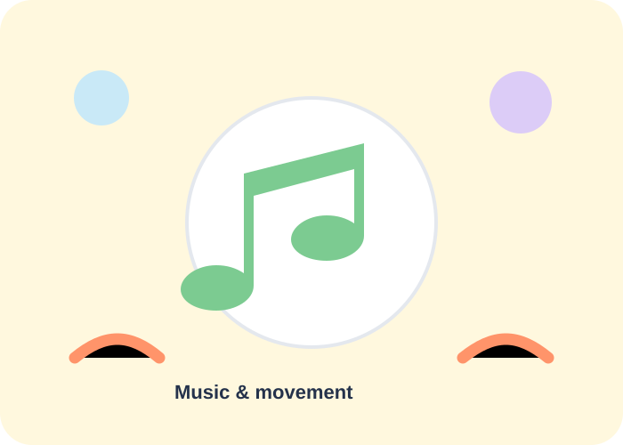

Art & Craft
Colour, texture, cutting, sticking and making encourage expression and fine-motor practice.
Creative, active and social experiences help children learn through doing.
Colour, texture, cutting, sticking and making encourage expression and fine-motor practice.

Stories and conversations support vocabulary, listening, imagination and confidence.

Rhythm, action songs and movement games turn learning into an active experience.

Movement and group games support coordination, confidence and social interaction.

Simple observations and discovery activities turn everyday questions into playful learning.

Collaborative activities help children practise communication, sharing and teamwork.
A typical day can include welcoming routines, focused learning, active play, creative time and stories.
Greetings, circle time and simple routines help children settle in comfortably.
Age-appropriate language, numeracy, art or discovery activities led in small groups.
Outdoor time and movement add energy and balance to the day.
Stories, conversation and quiet activities help children close the day calmly.